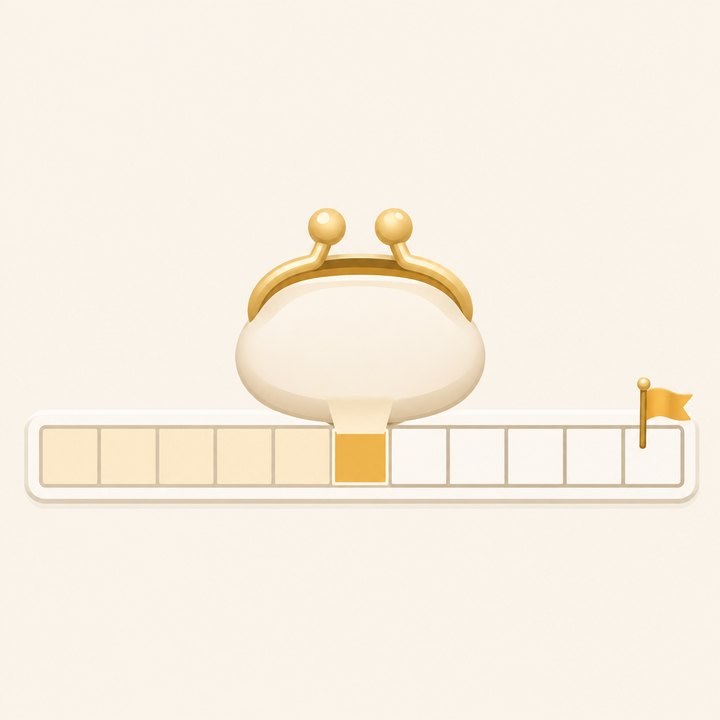

iPhone・iPad・Android の給料日までの家計簿
給料日まで、
今日あといくら使える？
給料日と手取りを入れると、次の給料日までの1日あたりと、今日あと使える額がすぐ出ます。家賃・スマホ・サブスクのような固定費と先取り貯金は先に引き、給料日が土日・祝日なら前の平日にずらして数えます。使ったら額を入れるだけ。
App Store・Google Play で配信予定入れた額だけで数える目安です。銀行・カード・電子マネーとはつながりません。買い切りで全部の機能が使え、アプリ内課金・サブスクリプション・広告はありません。

こんな困りごとのために
今日、いくらまでなら使っていい？
開いた瞬間に「今日あと ¥」が出ます。1日あたりは、残りを給料日の前の日までの日数で割った額です。
家賃や貯金を引き忘れる
固定費と先取り貯金は、給料日に手取りから先に引きます。残りが、本当に自由に使えるお金です。
給料日が土日だとずれる
25日が土日・祝日なら前の平日に、のように会社の決まりに合わせて期間を数えます。祝日は内閣府の決まりで数えます。
使いすぎた日のあと
使いすぎた分は、明日からの1日あたりに自動で割り振ります。足りないときは「給料日まで ¥〇〇 足りません」と言葉で出します。
できること
| 給料日 | 1〜31日か末日。土日（と、選べば祝日）なら前の平日か次の平日にずらす |
|---|---|
| 見えるもの | 今日あと・1日あたり・残り・給料日まであと何日・次の給料日・使えるお金の内訳・種類ごとの合計・過去の期間（余った・足りなかった） |
| 入れるもの | 使ったお金（額・種類・日付・メモ）・臨時の収入・固定費・先取り貯金 |
| データ | iCloud Drive の毎日の控え・控えのファイル・記録の CSV・アカウントなし・解析と広告なし |
使い方・プライバシーポリシー・利用規約もご覧ください。